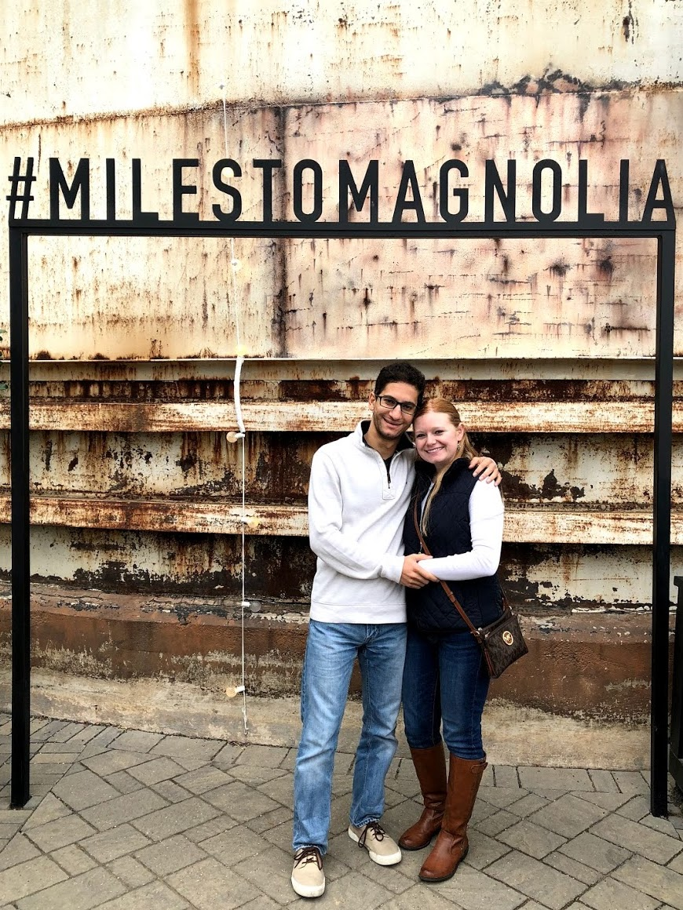

I am originally from Limassol, Cyprus. I first came to the U.S. as a Fulbright scholar in 2008 and earned my BBA and MPA degrees from the University of Texas at Austin in 2012. After graduation, I returned to Cyprus to fulfill the two-year home residency requirement of my Fulbright scholarship.
While in Cyprus, I worked at Deloitte, where my main clients were primarily in the banking and shipping industries. During this period, Cyprus negotiated a bailout program with the European Union that effectively bankrupted the second largest bank in Cyprus. The Central Bank of Cyprus selected PIMCO to assess the financial system, and I was part of the Deloitte team that helped PIMCO evaluate the loan origination process of the largest bank in Cyprus, covering its operations in both Cyprus and Greece. The institutional and industry knowledge I gained during this time was invaluable.
My time at Deloitte also made me realize that I wanted to research and understand phenomena in greater depth. After completing the two-year residency requirement, I returned to the U.S. and to the University of Texas at Austin to pursue a Ph.D. in Accounting, which I completed in 2019. In May 2019, I joined the James Benjamin Department of Accounting as an Assistant Professor.